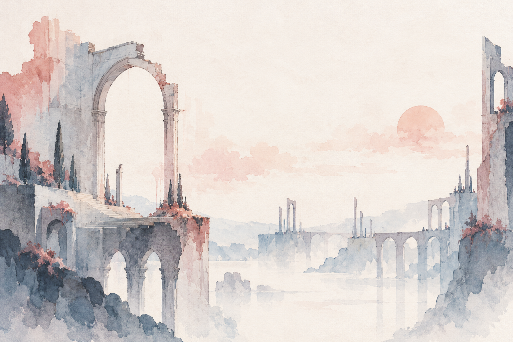

01 · CHAPTER PATH
Chapter threshold
Preview: Quiet Bridge
A chapter becomes active only after a separate action.
GRIS · ORIGINAL DIRECTION STUDY
Small chapter, memory, and pause fragments. Pigment marks narrative tone; labels carry state.

01 · CHAPTER PATH
A chapter becomes active only after a separate action.
02 · MEMORIES
Paper bird
Found · example state
A folded shape rests where the wind turns quiet.
Reading opens a view; it does not change collection state.
03 · PAUSE
Chapters Controls
Keep the world visible behind pause choices.